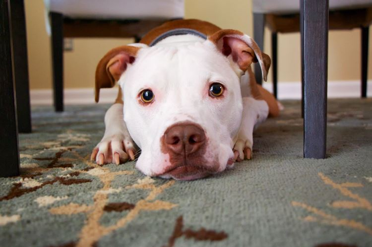

How To Stop Dogs Peeing When Excited?
How To Stop Dogs Peeing When Excited?
Dogs will sometimes pee out of excitement. The best way to calm down your dog is not to be dominant with them. You must first know what is making the dog excited, whether it be a person, another animal or something else. When you are sure of what excites the dog then you will have a good idea of how to stop dogs from peeing when they are excited.
You should not punish your dog when they have a mishap. This will only make things worse and your relationship with your dog may be put in danger. If you are nervous about approaching the dog after they have peed, try offering them a treat to let them know you are not mad at them.
Here are some reasons why dogs pee when they are excited:- They Are Excited
- Dog Has Anxiety
- Dog Teasing
- Dog Is Exercising
- Dog Is Bored
- Dog Has To Pee
- Dog Drinking Water When Excited
- They Are Frightened
If your dog is excited or nervous they will need to relieve themselves. Dog will pee when they are anxious because it helps relax them and calm down.
If your dog has anxiety when they are in a certain environment or around certain people you can help them by giving them plenty of attention and keeping yourself calm around the dog. This will help the dog feel more secure and not have to pee when nervous.
Another reason why dogs may start peeing is if they are being teased. They get excited and start to exhibit some of the signs that they need to pee. If you have experience with dogs then you know this is a normal reaction.
If your dog likes to run around the yard or play fetch, this can cause them t o start peeing when they finish their exercise. They are excited and the experience can cause them to have an accident in your home as well as around the outside of your house.
This is also a common reason why dogs start peeing around your house. If they get bored or lonely then they may start urinating just so that you will play with them. If you can play with your dog then this is a good way to prevent them from having an accident in your house or around the outside of your home.
This is why dogs do most of their peeing at specific times during the day, regardless of how much they drink. All dogs are different and have different ways of going to the toilet. Some dogs are more control than others and some will urinate in your home because their bladder can't hold it any longer. If your dog needs to go out during the day but you have work or other commitments, then make sure that you take them for a walk before leaving home and try your best not to leave them alone as much as possible.
This is another big mistake when it comes to dogs peeing inside, giving them too much water. Dogs need hydration just like we do, however giving them lots of water may increase the chance of an accident happening in your house because they may drink more than they can hold and this could cause an accident.
A dog who has been startled could urinate due to their fear of the situation. Dogs can also be afraid that someone will harm them and they might urinate to try and protect themselves. If this is the case then your dog needs to learn that there is nothing to fear in your home, garden or around other people who might visit.
So Your Dog Pees When Excited, Now What?
Like i said earlier, you should never punish your dog. I'm sure you do not want to be punished for something you did not mean to do.
Once you have discovered the reason your dog is peeing, then you can decide if it's worth correcting. Sometimes it will just be natural, like during play or feeding time. Other times it may be stressful for them, such as when they are being groomed or played with too much.
Here are some things you can do to help your dog:- Get a dog trainer
- Do research yourself
- Dog training aids
- Visit Local Pet Store
- Tell guests to stay calm
- Clean their pee without getting angry
- Never Scold Your Dog
- Play Music
- Stop rushing
This is the best way to go. There are many trainers that do visit your home so you don't have to move anything around for them. Choose a Good Trainer. Some people will train your dog free of charge before they start charging, just tell them what issues you are having with your dog.
There's plenty on the internet. Keep in mind you should only read from people that have real experience with training dogs. You can go to the library and check out books on dog training. You can also join a club where there will be experienced members willing to help you with your specific problem.
Dog whistle , dog shock collar , dog training collar.
You can also visit your local pet store where they will have plenty of advice for you. Get a good book on how to train your puppy or how to get control with your adult dog. There is so much information out there.
Guests should stay calm when they visit. This is very important because when a guest is nervous this will make the dog even more nervous and could cause peeing. So it is best that guests should just relax and tell your puppy or dog not to be afraid before they come in. If you have small children who like to scream and shout, tell them not to do this as this will scare the dog and make him/her feel more nervous.
If your dog has urinated during his exuberance, don't take it out on them. Clean up the pee immediately and calmly with some paper towels. If you are on the carpet, use some white vinegar to remove or neutralize the smell.
When your dog pees when they get excited, don't get angry with him (or her). It won't help the situation at all.
If you want to stop dogs peeing when excited, listen to some soothing music in your home or place where they stay as this could calm them down a bit. This will also make them feel more relaxed.
Many dogs get stressed out because their owners are running around too quickly or looking anxious. Take deep breaths yourself and enjoy the time you have in order to relax.
Why Do Dogs Urinate When Submissive?
Dogs will urinate when submissive if they see someone that they consider someone to be the "alpha dog". It is a way for them to show that they are not a threat. In this situation, it would be best if you take the dominant position.
If you are at home and manage to catch your dog in the act of peeing when excited, then tell him "no" or "bad dog" in a firm tone. This will help the dog associate what he's doing with negative feelings and eventually stop him from urinating without you having to tell them what's wrong every single time. Just because dogs can't speak human language doesn't mean they can't understand it.
How to Stop Your Dog's Submissive Urination?
There are some things you can do to stop your dog's submissive urination. Just like trying to solve excited peeing, you should never punish or scold your dog to fix the problem. When you punish or scold your dog for urinating, you are just associating the act of peeing with a negative feeling and eventually he will only start peeing behind your back. This does not solve the problem.
How To Stop Dogs From Submissive Peeing?
Just follow these simple steps and that won't happen anymore:- Do not talk to your dog in any tone of voice while addressing this issue -
- Do not give direct eye contact to your dog
- Punishing your dog later on does not help
- Take your dog outside when you get home
- Completely cleaning the urine may help
- Pet your dog under the chin
- Try not to get overly excited
You should be friendly and calm when talking to your pet. And do not make gestures towards the area where they peed as dogs find this threatening. At this time, your pet will want to get as far away from you (and the area) as possible.
Remember what I told you about the "alpha" dog position? When your dog urinates in a submissive way it is because it feels threatened and wants to neutralize that threat. So by looking at him directly, you are threatening him so he will take the submissive posture. The same applies when trying to fix excited peeing or marking. - if you threaten your pet (for example: shouting at him/her) or try to punish him for doing it, he will just think that something bad happened and repeat his mistakes.
Many people have this wrong belief that if they punish their dog after he has urinated then it would stop him from doing it again in future. The truth is dogs do not make any connection between punishment and peeing. Punishment just makes the situation worse so never resort to physical or verbal punishment even if your dog continues urinating in unwanted areas like carpet, bed, etc. If you find him peeing somewhere inappropriate then call out to your pet in a high pitched voice in a happy tone of voice while clapping at the same time.
This will give them a chance to pee right away but on the outside. They will learn that when they arrive home this is what they need to do. If you let your dog out at any other times during the day, make sure it is always done in an upbeat and happy manner. You should not act like its a chore though as they then get more excited about being inside than outside.
While some dogs may be able to smell through covers or carpets that have been cleaned, cleaning with great smelling chemicals that are safe for dogs will hide the smell. Preventing them from peeing in the same area again.
This will calm your dog down and help to relieve stress. Massages may also work but if you aren't familiar with massaging a dog in this manner, it is best to seek outside help from a professional.
If your dog gets overly excited about something like seeing you come home from work, don't enter the house at that moment but instead give your dog 10 minutes of free roaming inside while they settle themselves down before allowing them outside again for toileting.
Which Health Issues Cause Urination?
Urination in dogs may sometimes be a cause for concern. So it's important to understand what the key health concerns are that can result in your dog urinating outside of their house training area. In fact, you may have already observed signs of urinary problems without realizing it.
Dogs who are simply going through the process of puppyhood will also most likely pee on your carpets at some stage during their development - a type of practice that is completely normal. They can be expected to grow out of this habit though as they mature (though not necessarily as soon as they reach adulthood).
Read on and familiarize yourself with these health problems:- Urinary tract infection
- Bladder Stones
- Cystitis
Your dog might have an infection in his urinary tract if he is showing any of these signs: frequent urination, straining to urinate and blood-tinged urine. What you can do is have him checked by a vet (you might even want to take the dog for a test while it is convenient). If the veterinarian recommends medication, then get the appropriate drugs from your pharmacy. Make sure that you check with your vet to see how often your dog should be dosed and what dosage he requires based on his size and weight.
These can affect dogs just like they can affect humans. They are caused by excessive amounts of calcium, phosphorous and oxalate in the urine which then lead to a crystallization that forms stones in the bladder. The most common symptoms for dogs who have bladder stones is straining to urinate and blood in the urine. If you notice these signs, bring your dog to the veterinarian as soon as possible so that he can treat this condition with antibiotics (if necessary) and other measures like dietary changes or surgery.
This is known as a urinary tract infection and is caused by bacteria in the urethra. Common symptoms include frequent urination, blood in urine, painful urination and pain in the lower abdomen. If you notice any of these signs, take your dog to a veterinarian right away so that he can prescribe antibiotics or give him an injection of fluids to keep him from dehydrating.
How To Get Rid Of Urine odors
If your dog has made mistakes on your carpet or furniture it is important that you clean them thoroughly with an enzyme based cleaner to kill off all traces of bacteria and avoid getting his scent back onto the area again. At the same time do not use ammonia based cleaners as they will attract more dogs to "go" where there was once business already. Dogs that smell urine in a specific spot will want to pee in that area to claim it as their own.
Dogs like to mark their territory and urine is one of the best ways they have to do this, not only that but it reinforces the behavior in your dog when he knows that it will get him where you want him to go next time. So be sure to clean up after your dog every single time and keep his nails clipped so he can't dig deep into the carpet or flooring which can make cleaning difficult.
You can purchase an enzyme cleaner from your local pet store for a great job or make use of some common household ingredients such as baking soda, hydrogen peroxide with a few drops of dishwashing liquid added in for good measure. All these products are non toxic and safe for your dog.
Conclusion
You just learned how to stop your dog from peeing when excited. This is a common problem and one that can be fixed with some patience, planning, and a few basic tricks. The first thing you want to do is plan for this type of situation by placing the pet in an area where they won't have accidents if they get too excited. If possible, try not to bring them into areas where there might be strangers or other dogs so their excitement doesn’t cause them to lose control of themselves; whether it's at home or on walks outside (unless you're using a leash). Dogs need time alone after being around people, especially those who are new or unfamiliar, which will help calm down any adrenaline rush caused by the activity of being outside.